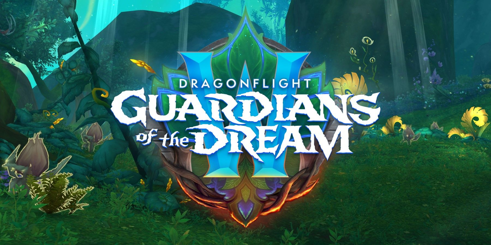

Dragonflight Patch 10.2: Guardians of the Dream brings a new zone, the Emerald Dram, a new raid, Amirdrassil, the Dream's Hope, and a new season, Season 3, to World of Warcraft. We cover everything you need to know about the new patch, including details on what is included and what to expect, as well as links to in-depth guides, articles, and walkthroughs.
It's finally here, after years of speculation, we get to go to the Emerald Dream. The portion of the Emerald Dream that we get to explore can be accessed to the west of the Ohn'ahran Plains. Fyrakk has torn his way in and is wreaking havoc there as he tries to get to the new World Tree, Amirdrassil.
The Emerald Dream is a reflection of the wild world so, as you might expect, it resembles not only the western edge of the Ohn'ahran Plains, where the Green Dragonflight resides, but also Val'sharah, Ardenweald, Mount Hyjal, and other wild-centric zones. As in Mount Hyjal, the antithesis of the Emerald Dream, fire, is present as the antagonist. Where the Firelands menaced Mount Hyjal, Fyrakk does the same for the Emerald Dream. He even borrows a Firelands portal and the Druids of the Flame to bolster his forces.